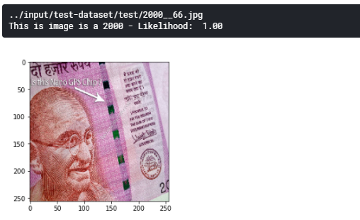

input image :../input/test-dataset/test/2000__66.jpg
prediction :This is image is a 2000 - Likelihood: 1.00
input image :../input/test-dataset/test/20__226.jpg
prediction :This is image is a 20 - Likelihood: 0.57
input image :../input/test-dataset/test/500__37.jpg
prediction :This is image is a 500 - Likelihood: 0.99
input image :../input/test-dataset/test/Background__312.jpg
prediction :This is image is a Background - Likelihood: 0.98
#import basic essential libraries
import pandas as pd
import numpy as np
import path
import os
import matplotlib.pyplot as plt
%matplotlib inline
for dirname, _, filenames in os.walk('/kaggle/input'):
for filename in filenames:
print(os.path.join(dirname, filename))
# import keras libraries to build model and conv net
import tensorflow as tf
from tensorflow.python import keras
from tensorflow.python.keras.models import Sequential
from tensorflow.python.keras.layers import Dense,Conv2D,MaxPooling2D,Dropout,Flatten
from pathlib import Path
# current datasetonly has 4k images
# so image agumentation to virtually increase size of dataset
# help (ImageDataGenerator?)
from tensorflow.python.keras.preprocessing.image import ImageDataGenerator
data_agumentation=ImageDataGenerator(rescale=0./255,
shear_range=0.2,
zoom_range=0.2,
horizontal_flip=True,
vertical_flip=True
)
# load training data
train_data=data_agumentation.flow_from_directory(directory='../input/indian-currency-note-images-dataset-2020/Indian
currency dataset v1/training',
target_size=(256,256),
class_mode='categorical',
batch_size=32
)
#load validation data
val_data=ImageDataGenerator().flow_from_directory(directory='../input/indian-currency-note-images-dataset-2020/Indian
currency dataset v1/validation',
target_size=(256,256),
class_mode='categorical'
)
Early stopping and callback
# import modelcheckpoint and earlystopping
from tensorflow.python.keras.callbacks import ModelCheckpoint,EarlyStopping
# checkpoint monitors the given parameter and save the model automatically
# here given parameter to monitor is val_loss
# it moniters the val loss of each epoch and val_loss is lower than previous one it save the current model ad wieght
checkpoint=ModelCheckpoint("currency_detector_smal_model.h5", monitor='val_loss',verbose=1,
save_best_only=True,save_weights_only=False,mode='auto', period=1)
# early stopping .. it stops the trainng phase if there is no improvement in the model
# patience defines how many epoch can b ignored before forcefully stoping the model
early = EarlyStopping(monitor='val_loss', min_delta=0, patience=10, verbose=1, mode='auto')
define model and add layers
# import ResNet50
from tensorflow.keras.applications import ResNet50
# total number of classes (7 diffferent currency and 1 background class)
num_classes = 8
# load the weight
resnet_weights_path = '../input/resnet-weights/resnet50_weights_tf_dim_ordering_tf_kernels_notop.h5'
#define the mdel
my_new_model = Sequential()
# add the resnet to new defined model
my_new_model.add(ResNet50(include_top=False, pooling='avg', weights=resnet_weights_path))
#last fully connected layer with softmax as a activation function
my_new_model.add(Dense(num_classes, activation='softmax'))
my_new_model.layers[0].trainable = False
compile Model
# compile model with softmax as activatio fuction
my_new_model.add(Dense(num_classes, activation='softmax'))
Fit the model with train and val dataset
# fit the model with train data and validation data
# epoch 50
my_new_model.fit_generator(
train_data,
epochs = 50,
validation_data=val_data,
callbacks=[checkpoint,early])
save model into JSON
# save the json model
model_json = my_new_model.to_json()
with open("resnet_50_model.json", "w") as json_file:
json_file.write(model_json)
class labels
# These are the class labels from the training data (Each number stands for the currency denomination)
class_labels = [
'10','100','20','200','2000','50','500','Background'
]
Show Img
# Load an image file to test, resizing it to 256x256 pixels
# to save time in training I resize images to 256x256
from tensorflow.python.keras.preprocessing import image
img = image.load_img("../input/indian-currency-notes/indian_currency_new/validation/100/38.jpg", target_size=(256,256))
plt.imshow(img)
Prediction method
# Convert the image to a numpy array
from tensorflow.python.keras.preprocessing import image
def prediction(file_name):
img = image.load_img(file_name, target_size=(256,256))
image_to_test = image.img_to_array(img)
# Add a fourth dimension to the image (since Keras expects a list of images, not a single image)
list_of_images = np.expand_dims(image_to_test, axis=0)
# Make a prediction using the model
results = my_new_model.predict(list_of_images)
# Since we are only testing one image, we only need to check the first result
single_result = results[0]
# We will get a likelihood score for all 10 possible classes. Find out which class had the highest score.
most_likely_class_index = int(np.argmax(single_result))
class_likelihood = single_result[most_likely_class_index]
# Get the name of the most likely class
class_label = class_labels[most_likely_class_index]
# Print the result
print(file_name)
print("This is image is a {} - Likelihood: {:2f}".format(class_label, class_likelihood))
prediction method call
import glob
# Find all *.jpg files in the directory
file_name_list = glob.glob('../input/indian-currency-notes/indian_currency_new/validation/100/38.jpg')
print(len(file_name_list))
for file_name in file_name_list:
prediction(file_name)
# import essentials to build cov net
from keras.models import Sequential
from keras.layers import Dense
from keras.models import model_from_json
# ResNet-50 model
json_file = open('/kaggle/input/transfer-learning/resnet_50_model.json', 'r')
#reading model
loaded_model_json = json_file.read()
json_file.close()
#loading model
loaded_model = model_from_json(loaded_model_json)
# loading weights into new model
loaded_model.load_weights("../input/indian-currency-note-resnet-weights/currency_detector_2.4GB_earlyStopping_model.h5")
print("Loaded model from disk")
# evaluate loaded model on test data
loaded_model.compile(loss='binary_crossentropy', optimizer='rmsprop', metrics=['accuracy'])
Dependecies for text to speech conversion
#Dependecies
#install ggts and pyttsx3 before execution
#gTTS (Google Text-to-Speech), a Python library and CLI tool to interface with Google Translate's text-to-speech API.
#Write spoken mp3 data to a file, a file-like object (bytestring) for further audio manipulation, or stdout.
!pip install gTTS
#pyttsx3 is a text-to-speech conversion library in Python.
#Unlike alternative libraries, it works offline, and is compatible with both Python 2 and 3.
!pip install pyttsx3
prediction function with text to speech functionality
# Convert the image to a numpy array
from gtts import gTTS
from tensorflow.python.keras.preprocessing import image
import os
import pyttsx3
def prediction(file_name):
img = image.load_img(file_name, target_size=(256,256))
image_to_test = image.img_to_array(img)
#since Keras expects a list of images, not a single image,
# Add a fourth dimension to the image
list_of_images = np.expand_dims(image_to_test, axis=0)
# Make a prediction using the model
results = loaded_model.predict(list_of_images)
# Since we are only testing one image, we only need to check the first result
single_result = results[0]
# We will get a likelihood score for all possible classes.
# Find out which class had the highest score.
# the class with highest likelihood is predicted as the result.
most_likely_class_index = int(np.argmax(single_result))
class_likelihood = single_result[most_likely_class_index]
# Get the name of the most likely class
class_label = class_labels[most_likely_class_index]
# Print the result
print(file_name)
print("This is image is a {} - Likelihood: {: .2f}".format(class_label, class_likelihood))
# convert the actual prediction result text into audio file.
tts(class_label,class_likelihood)
load image to predict
# Load an image file to test, resizing it to 256x256 pixels (as required by this model)
# to save time in training I resize images to 256x256
import matplotlib.pyplot as plt
from tensorflow.python.keras.preprocessing import image
# example of test image
img = image.load_img("../input/test-dataset/test/Background__305.jpg", target_size=(256,256))
plt.imshow(img)
text to spech conversion
# import pydub (Manipulate audio with an simple and easy high level interface)
from pydub import AudioSegment
import IPython
def tts(class_label,class_likelihood):
language='en'
# if no currency detected or uploaded image is bagkground
if(class_label=="Background"):
mytext=' sorry but i am detecting only the'+class_label+', please hold the note under the camera.'
else:
mytext="This is {} Rs note, and I am {: .2f} % sure of it".format(class_label, class_likelihood*100)
# gTTS() converts text into the audio supports multiple languages.
myobj = gTTS(text=mytext, lang=language, slow=False)
#store audio result
file='result.mp3'
myobj.save(file)
predict the currecy
#predict the single image file
file_to_predict="../input/test-dataset/test/200.__192.jpg"
# display currency image
img = image.load_img(file_to_predict, target_size=(256,256))
plt.imshow(img)
#predict the currecy
prediction(file_to_predict)
save audio result
# save audio result into .mp3 file
path='./result.mp3'
IPython.display.Audio(path)